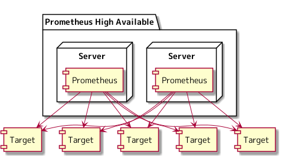
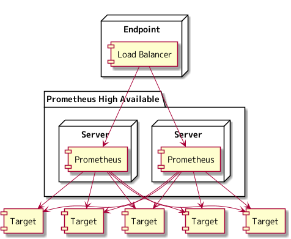
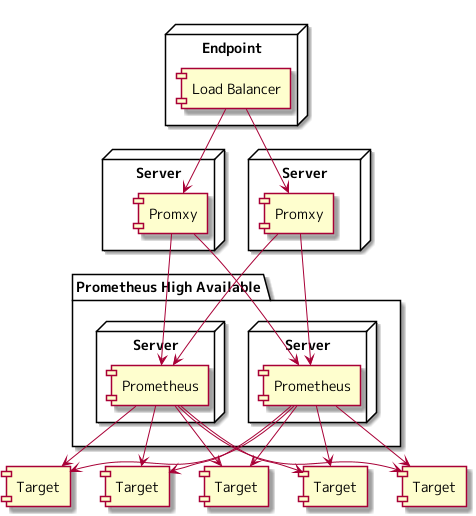
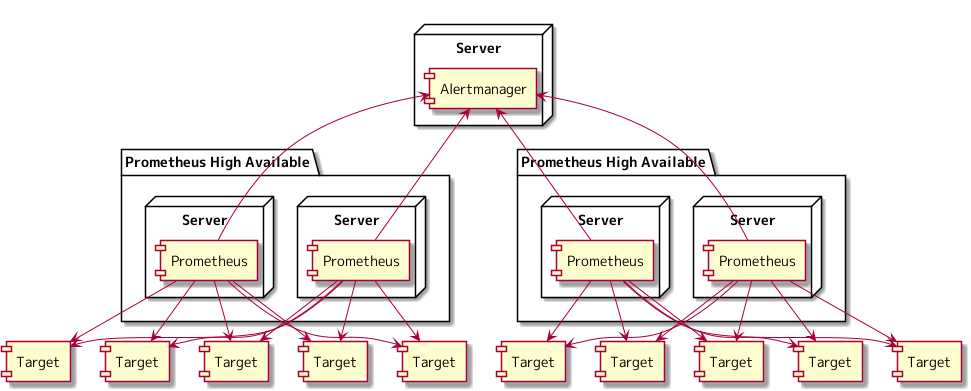
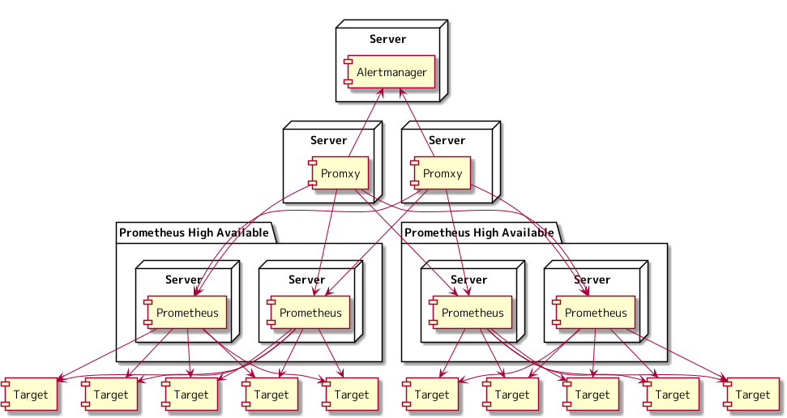
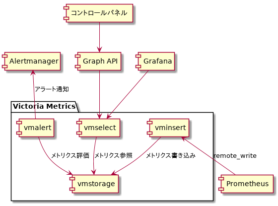

さくらインターネット Advent Calendar 2020 11日目の記事になります。
「さくらの専用サーバ PHY」にてメトリクス保存・公開の基盤を担当している者です。 アプリケーション、サーバー、ネットワーク機器などのメトリクスを保存・公開する基盤として Prometheus を利用しています。 Prometheus にあるメトリクスを使い、 ユーザーにトラフィックグラフを提供したり、 自分達がシステムの異常に気が付くための監視を構成しています。
Prometheus のメトリクスを利用するにあたり、抱えていた2つの課題を Promxy を利用することによって解決することができ、 そこに至るまで、どのように考え、 どのようなアーキテクチャをとったのか、これからどうしていこうと考えているのかについて書きました。
ユーザーにトラフィックグラフを提供する
「さくらの専用サーバ PHY」のコントロールパネルにてトラフィックグラフを提供しており、 値は Prometheus に保存されているメトリクスを使っています。 ユーザーにトラフィックグラフのサービスを提供するにあたり、 インフラ側の可用性を上げるための構成を考え、実装する必要がありました。
Prometheus での高可用性

2台の Prometheus を動かし同じメトリクスを取得させるというのが公式の見解となっています。
https://prometheus.io/docs/introduction/faq/#can-prometheus-be-made-highly-available
ロードバランサを使った構成

Prometheus 公式の構成で、ロードバランサをエンドポイントにしてバックエンドに2台の Prometheus がいるという構成をとったとして、どうなるかを考えてみました。
この構成では、どちらからの Prometheus が一定時間落ちて復帰した場合、 保存しているメトリクスの対称性が失われてしまい、 エンドポイントにリクエストするごとに返ってくるメトリクスの結果が異なってしまうという状態がが発生するなと考え、採用を見送りました。
ロードバランサと Promxy を組み合わせた構成

Promxy は、メトリクスを Aggregate する機能を持っています。 Prometheus のセットが同じタイミングで落ちない限りは、 対称性の失われた Prometheus のセットに対して、 欠損することなくメトリクスを返すことができるため、 Promxy を使ったこちらの構成を採用しました。
アラートルールの管理
サービスの利用者が増えれば、利用される機器も増え、取得するメトリクスも線形に増加していきます。 1台の Prometheus 取得できるメトリクスには限界があり、 「さくらの専用サーバ PHY」で扱っている全てのメトリクスは管理できません。 Prometheus を複数台運用することが前提となります。 Prometheus のメトリクスを使ったアラート発報のためのアラートルールをどのように管理していくのかという問題に当たりました。
Prometheus のみの場合

Prometheus を使う場合、 アラート発報のためのアラートルールを Prometheus に設定する構成となります。 Prometheus の台数ぶんアラートルールを配布しなければならず、 Prometheus のセットが増えるごとにコンフィグを適用する時間が線形に増加していきそうだなと考えました。 ユーザーの増加に合わせて Prometheus のセットが増えていきアラートルールの適用、切り戻し時間が増加していく未来を想像しました。 アラートルールを一箇所に集約し、メトリクス評価とアラート発報する仕組みは無いだろうかと考えました。
Promxy と組み合わせた場合

Promxy は Prometheus からメトリクスを取得し、設定したアラートルールに従いメトリクスを評価します。 アラートルールに該当していた場合は、 Promxy から Alertmanager にアラートが通知されます。 全ての Prometheus にアラートルールを配布する構成から Promxy でアラートルールを管理すればよい構成になりアラートルールを集約できました。 Prometheus からメトリクスの評価とアラート発報を切り離したことで、 Prometheus はメトリクスの取得と公開という役割になり Prometheus の構成を単純にできました。
今後の構想

Promxy を使った構成は、自分が利用している範囲では、特に不具合もなく動いています。 開発者には圧倒的感謝しかないです。
Promxy は、メトリクスを取得するインタフェース、メトリクス評価、 アラート発報という3つのサービスを提供しています。 役割多すぎの働きすぎだなと自分の中では思っています。 Prometheus がメトリクスの取得と公開をしているのも働きすぎだなと思っています。 もっと構成を単純にしたいです。
Prometheus のメトリクスを Victoria Metrics に集約し、 メトリクスを公開するお仕事を Prometheus から切り離し、 アラートルールの評価とアラート発報も Victoria Metrics を参照する構成にできないかなと考えています。
Victoria Metrics の環境は用意したので、時間を見付けて少しずつ検証を進めていきます。